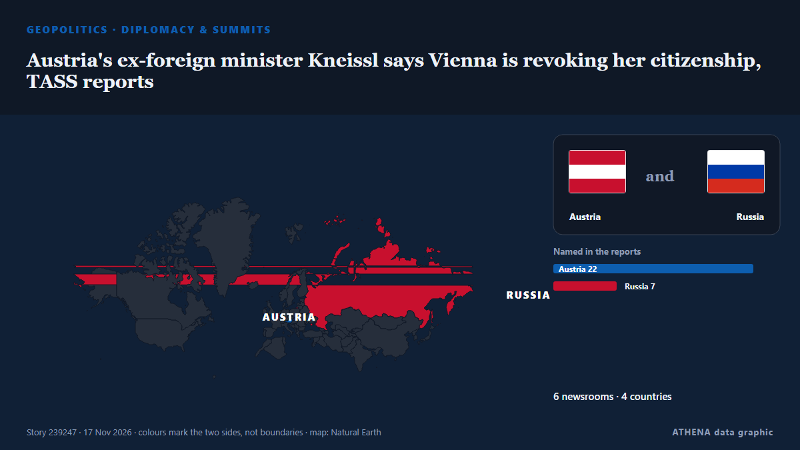

Austria's ex-foreign minister Kneissl says Vienna is revoking her citizenship, TASS reports 
Map of Austria and Russia. 6 newsrooms in 4 countries MOSCOW, Nov 16 - Karin Kneissl, a former Austrian foreign minister who lives in Russia, said on Monday that Austrian authorities have initiated proceedings to revoke her citizenship, Russian state… from The Straits Times
In brief Reported independently by 6 outlets in 4 countries since 12 Jun, first by The Local Austria; coverage is fading. ATHENA rates the risk low (0.7/10), driven mainly by the quality of the evidence and its geographic and sector reach. Confidence is 82% (high), with 6 independent outlets corroborating it and an average source reliability of 73%. Outlets by country: Austria (3), Russia (3), Singapore (1). Coverage: 12 Jun to 17 Nov, 30104 hours.
Why it matters: Security and diplomatic developments can shift alliances, trade and markets well beyond the countries directly involved.
What changed: 4 new reports from 4 outlets in the 24 hours to 17 Nov.
ATHENA Glaux · automated analysis of 8 reports from 4 countries First seen 12 Jun 2023, 11:02 UTC Updated 17 Nov 2026, 18:43 UTC
First reported as: Austria sees hike in number of people granted citizenship in 2026
Automated Selected, grouped and scored by ATHENA's published method from 5 independent outlets. The headline is the outlet's own; ATHENA's sentences follow fixed patterns - no generative AI writes them. How it works →
How to read this page What you are reading 6 outlets in 4 countries reported this event. The reports below are listed in the order they appeared; each headline opens the original article. ATHENA writes none of the reports. Our reading For the record — The reports describe a completed, domestic, commercial or personal matter. We list it so you can see who reported it and when. We are not tracking a risk of wider conflict here.How much evidence Limited Treat this page as an early report.After repeats, off-topic items and stale reports are removed, 5 of the 8 listed reports are counted; 100% of the headlines match the event.
What this does not mean ATHENA measures how an event is reported, not whether it is true. This is not a forecast, a judgement on who is right, or advice. What would change it Reports from other independent outlets showing a different development, or a firm confirmation or denial from an official source. Reading R2 · refreshed with every update of this page. ATHENA has not yet published a track record for these readings; when it does, it will be linked here.
At a glance 3.5 Importance
0.7 Risk · low
82% Confidence
How we score this ›
Selected, scored and written by ATHENA's published methodology. No editor intervenes in individual events. How this is produced ›
peak 5 12 Jun 11:02 UTC 17 Nov 11:02 UTC 12 Jun 11:02 UTC · 1 report 14 Jun 11:02 UTC · 0 reports 16 Jun 11:02 UTC · 0 reports 18 Jun 11:02 UTC · 0 reports 20 Jun 11:02 UTC · 0 reports 22 Jun 11:02 UTC · 0 reports 24 Jun 11:02 UTC · 0 reports 26 Jun 11:02 UTC · 0 reports 28 Jun 11:02 UTC · 0 reports 30 Jun 11:02 UTC · 0 reports 02 Jul 11:02 UTC · 0 reports 04 Jul 11:02 UTC · 0 reports 06 Jul 11:02 UTC · 0 reports 08 Jul 11:02 UTC · 0 reports 10 Jul 11:02 UTC · 0 reports 12 Jul 11:02 UTC · 0 reports 14 Jul 11:02 UTC · 0 reports 16 Jul 11:02 UTC · 0 reports 18 Jul 11:02 UTC · 0 reports 20 Jul 11:02 UTC · 0 reports 22 Jul 11:02 UTC · 0 reports 24 Jul 11:02 UTC · 0 reports 26 Jul 11:02 UTC · 0 reports 28 Jul 11:02 UTC · 0 reports 30 Jul 11:02 UTC · 0 reports 01 Aug 11:02 UTC · 0 reports 03 Aug 11:02 UTC · 0 reports 05 Aug 11:02 UTC · 0 reports 07 Aug 11:02 UTC · 0 reports 09 Aug 11:02 UTC · 0 reports 11 Aug 11:02 UTC · 0 reports 13 Aug 11:02 UTC · 0 reports 15 Aug 11:02 UTC · 0 reports 17 Aug 11:02 UTC · 0 reports 19 Aug 11:02 UTC · 0 reports 21 Aug 11:02 UTC · 0 reports 23 Aug 11:02 UTC · 0 reports 25 Aug 11:02 UTC · 0 reports 27 Aug 11:02 UTC · 0 reports 29 Aug 11:02 UTC · 0 reports 31 Aug 11:02 UTC · 0 reports 02 Sep 11:02 UTC · 0 reports 04 Sep 11:02 UTC · 0 reports 06 Sep 11:02 UTC · 0 reports 08 Sep 11:02 UTC · 0 reports 10 Sep 11:02 UTC · 0 reports 12 Sep 11:02 UTC · 0 reports 14 Sep 11:02 UTC · 0 reports 16 Sep 11:02 UTC · 0 reports 18 Sep 11:02 UTC · 0 reports 20 Sep 11:02 UTC · 0 reports 22 Sep 11:02 UTC · 0 reports 24 Sep 11:02 UTC · 0 reports 26 Sep 11:02 UTC · 0 reports 28 Sep 11:02 UTC · 0 reports 30 Sep 11:02 UTC · 0 reports 02 Oct 11:02 UTC · 0 reports 04 Oct 11:02 UTC · 0 reports 06 Oct 11:02 UTC · 0 reports 08 Oct 11:02 UTC · 0 reports 10 Oct 11:02 UTC · 0 reports 12 Oct 11:02 UTC · 0 reports 14 Oct 11:02 UTC · 0 reports 16 Oct 11:02 UTC · 0 reports 18 Oct 11:02 UTC · 0 reports 20 Oct 11:02 UTC · 0 reports 22 Oct 11:02 UTC · 0 reports 24 Oct 11:02 UTC · 0 reports 26 Oct 11:02 UTC · 0 reports 28 Oct 11:02 UTC · 0 reports 30 Oct 11:02 UTC · 0 reports 01 Nov 11:02 UTC · 0 reports 03 Nov 11:02 UTC · 0 reports 05 Nov 11:02 UTC · 0 reports 07 Nov 11:02 UTC · 0 reports 09 Nov 11:02 UTC · 0 reports 11 Nov 11:02 UTC · 0 reports 13 Nov 11:02 UTC · 0 reports 15 Nov 11:02 UTC · 0 reports 17 Nov 11:02 UTC · 0 reports 19 Nov 11:02 UTC · 0 reports 21 Nov 11:02 UTC · 0 reports 23 Nov 11:02 UTC · 0 reports 25 Nov 11:02 UTC · 0 reports 27 Nov 11:02 UTC · 0 reports 29 Nov 11:02 UTC · 0 reports 01 Dec 11:02 UTC · 0 reports 03 Dec 11:02 UTC · 0 reports 05 Dec 11:02 UTC · 0 reports 07 Dec 11:02 UTC · 0 reports 09 Dec 11:02 UTC · 0 reports 11 Dec 11:02 UTC · 0 reports 13 Dec 11:02 UTC · 0 reports 15 Dec 11:02 UTC · 0 reports 17 Dec 11:02 UTC · 0 reports 19 Dec 11:02 UTC · 0 reports 21 Dec 11:02 UTC · 0 reports 23 Dec 11:02 UTC · 0 reports 25 Dec 11:02 UTC · 0 reports 27 Dec 11:02 UTC · 0 reports 29 Dec 11:02 UTC · 0 reports 31 Dec 11:02 UTC · 0 reports 02 Jan 11:02 UTC · 0 reports 04 Jan 11:02 UTC · 0 reports 06 Jan 11:02 UTC · 0 reports 08 Jan 11:02 UTC · 0 reports 10 Jan 11:02 UTC · 0 reports 12 Jan 11:02 UTC · 0 reports 14 Jan 11:02 UTC · 0 reports 16 Jan 11:02 UTC · 0 reports 18 Jan 11:02 UTC · 0 reports 20 Jan 11:02 UTC · 0 reports 22 Jan 11:02 UTC · 0 reports 24 Jan 11:02 UTC · 0 reports 26 Jan 11:02 UTC · 0 reports 28 Jan 11:02 UTC · 0 reports 30 Jan 11:02 UTC · 0 reports 01 Feb 11:02 UTC · 0 reports 03 Feb 11:02 UTC · 0 reports 05 Feb 11:02 UTC · 0 reports 07 Feb 11:02 UTC · 0 reports 09 Feb 11:02 UTC · 0 reports 11 Feb 11:02 UTC · 0 reports 13 Feb 11:02 UTC · 0 reports 15 Feb 11:02 UTC · 0 reports 17 Feb 11:02 UTC · 0 reports 19 Feb 11:02 UTC · 0 reports 21 Feb 11:02 UTC · 0 reports 23 Feb 11:02 UTC · 0 reports 25 Feb 11:02 UTC · 0 reports 27 Feb 11:02 UTC · 0 reports 29 Feb 11:02 UTC · 0 reports 02 Mar 11:02 UTC · 0 reports 04 Mar 11:02 UTC · 0 reports 06 Mar 11:02 UTC · 0 reports 08 Mar 11:02 UTC · 0 reports 10 Mar 11:02 UTC · 0 reports 12 Mar 11:02 UTC · 0 reports 14 Mar 11:02 UTC · 0 reports 16 Mar 11:02 UTC · 0 reports 18 Mar 11:02 UTC · 0 reports 20 Mar 11:02 UTC · 0 reports 22 Mar 11:02 UTC · 0 reports 24 Mar 11:02 UTC · 0 reports 26 Mar 11:02 UTC · 0 reports 28 Mar 11:02 UTC · 0 reports 30 Mar 11:02 UTC · 0 reports 01 Apr 11:02 UTC · 0 reports 03 Apr 11:02 UTC · 0 reports 05 Apr 11:02 UTC · 0 reports 07 Apr 11:02 UTC · 0 reports 09 Apr 11:02 UTC · 0 reports 11 Apr 11:02 UTC · 0 reports 13 Apr 11:02 UTC · 0 reports 15 Apr 11:02 UTC · 0 reports 17 Apr 11:02 UTC · 0 reports 19 Apr 11:02 UTC · 0 reports 21 Apr 11:02 UTC · 0 reports 23 Apr 11:02 UTC · 0 reports 25 Apr 11:02 UTC · 0 reports 27 Apr 11:02 UTC · 0 reports 29 Apr 11:02 UTC · 0 reports 01 May 11:02 UTC · 0 reports 03 May 11:02 UTC · 0 reports 05 May 11:02 UTC · 0 reports 07 May 11:02 UTC · 0 reports 09 May 11:02 UTC · 0 reports 11 May 11:02 UTC · 0 reports 13 May 11:02 UTC · 0 reports 15 May 11:02 UTC · 0 reports 17 May 11:02 UTC · 0 reports 19 May 11:02 UTC · 0 reports 21 May 11:02 UTC · 0 reports 23 May 11:02 UTC · 0 reports 25 May 11:02 UTC · 0 reports 27 May 11:02 UTC · 0 reports 29 May 11:02 UTC · 0 reports 31 May 11:02 UTC · 0 reports 02 Jun 11:02 UTC · 0 reports 04 Jun 11:02 UTC · 0 reports 06 Jun 11:02 UTC · 0 reports 08 Jun 11:02 UTC · 0 reports 10 Jun 11:02 UTC · 0 reports 12 Jun 11:02 UTC · 0 reports 14 Jun 11:02 UTC · 0 reports 16 Jun 11:02 UTC · 0 reports 18 Jun 11:02 UTC · 0 reports 20 Jun 11:02 UTC · 0 reports 22 Jun 11:02 UTC · 0 reports 24 Jun 11:02 UTC · 0 reports 26 Jun 11:02 UTC · 0 reports 28 Jun 11:02 UTC · 0 reports 30 Jun 11:02 UTC · 0 reports 02 Jul 11:02 UTC · 0 reports 04 Jul 11:02 UTC · 0 reports 06 Jul 11:02 UTC · 0 reports 08 Jul 11:02 UTC · 0 reports 10 Jul 11:02 UTC · 0 reports 12 Jul 11:02 UTC · 0 reports 14 Jul 11:02 UTC · 0 reports 16 Jul 11:02 UTC · 0 reports 18 Jul 11:02 UTC · 0 reports 20 Jul 11:02 UTC · 0 reports 22 Jul 11:02 UTC · 0 reports 24 Jul 11:02 UTC · 0 reports 26 Jul 11:02 UTC · 0 reports 28 Jul 11:02 UTC · 0 reports 30 Jul 11:02 UTC · 0 reports 01 Aug 11:02 UTC · 0 reports 03 Aug 11:02 UTC · 0 reports 05 Aug 11:02 UTC · 0 reports 07 Aug 11:02 UTC · 0 reports 09 Aug 11:02 UTC · 0 reports 11 Aug 11:02 UTC · 0 reports 13 Aug 11:02 UTC · 0 reports 15 Aug 11:02 UTC · 0 reports 17 Aug 11:02 UTC · 0 reports 19 Aug 11:02 UTC · 0 reports 21 Aug 11:02 UTC · 0 reports 23 Aug 11:02 UTC · 0 reports 25 Aug 11:02 UTC · 0 reports 27 Aug 11:02 UTC · 0 reports 29 Aug 11:02 UTC · 0 reports 31 Aug 11:02 UTC · 0 reports 02 Sep 11:02 UTC · 0 reports 04 Sep 11:02 UTC · 0 reports 06 Sep 11:02 UTC · 0 reports 08 Sep 11:02 UTC · 0 reports 10 Sep 11:02 UTC · 0 reports 12 Sep 11:02 UTC · 0 reports 14 Sep 11:02 UTC · 0 reports 16 Sep 11:02 UTC · 0 reports 18 Sep 11:02 UTC · 0 reports 20 Sep 11:02 UTC · 0 reports 22 Sep 11:02 UTC · 0 reports 24 Sep 11:02 UTC · 0 reports 26 Sep 11:02 UTC · 0 reports 28 Sep 11:02 UTC · 0 reports 30 Sep 11:02 UTC · 0 reports 02 Oct 11:02 UTC · 0 reports 04 Oct 11:02 UTC · 0 reports 06 Oct 11:02 UTC · 0 reports 08 Oct 11:02 UTC · 0 reports 10 Oct 11:02 UTC · 0 reports 12 Oct 11:02 UTC · 0 reports 14 Oct 11:02 UTC · 0 reports 16 Oct 11:02 UTC · 0 reports 18 Oct 11:02 UTC · 0 reports 20 Oct 11:02 UTC · 0 reports 22 Oct 11:02 UTC · 0 reports 24 Oct 11:02 UTC · 0 reports 26 Oct 11:02 UTC · 0 reports 28 Oct 11:02 UTC · 0 reports 30 Oct 11:02 UTC · 0 reports 01 Nov 11:02 UTC · 0 reports 03 Nov 11:02 UTC · 0 reports 05 Nov 11:02 UTC · 0 reports 07 Nov 11:02 UTC · 0 reports 09 Nov 11:02 UTC · 0 reports 11 Nov 11:02 UTC · 0 reports 13 Nov 11:02 UTC · 0 reports 15 Nov 11:02 UTC · 0 reports 17 Nov 11:02 UTC · 0 reports 19 Nov 11:02 UTC · 0 reports 21 Nov 11:02 UTC · 0 reports 23 Nov 11:02 UTC · 0 reports 25 Nov 11:02 UTC · 0 reports 27 Nov 11:02 UTC · 0 reports 29 Nov 11:02 UTC · 0 reports 01 Dec 11:02 UTC · 0 reports 03 Dec 11:02 UTC · 0 reports 05 Dec 11:02 UTC · 0 reports 07 Dec 11:02 UTC · 0 reports 09 Dec 11:02 UTC · 0 reports 11 Dec 11:02 UTC · 0 reports 13 Dec 11:02 UTC · 0 reports 15 Dec 11:02 UTC · 0 reports 17 Dec 11:02 UTC · 0 reports 19 Dec 11:02 UTC · 0 reports 21 Dec 11:02 UTC · 0 reports 23 Dec 11:02 UTC · 0 reports 25 Dec 11:02 UTC · 0 reports 27 Dec 11:02 UTC · 0 reports 29 Dec 11:02 UTC · 0 reports 31 Dec 11:02 UTC · 0 reports 02 Jan 11:02 UTC · 0 reports 04 Jan 11:02 UTC · 0 reports 06 Jan 11:02 UTC · 0 reports 08 Jan 11:02 UTC · 0 reports 10 Jan 11:02 UTC · 0 reports 12 Jan 11:02 UTC · 0 reports 14 Jan 11:02 UTC · 0 reports 16 Jan 11:02 UTC · 0 reports 18 Jan 11:02 UTC · 0 reports 20 Jan 11:02 UTC · 0 reports 22 Jan 11:02 UTC · 0 reports 24 Jan 11:02 UTC · 0 reports 26 Jan 11:02 UTC · 0 reports 28 Jan 11:02 UTC · 0 reports 30 Jan 11:02 UTC · 0 reports 01 Feb 11:02 UTC · 0 reports 03 Feb 11:02 UTC · 0 reports 05 Feb 11:02 UTC · 0 reports 07 Feb 11:02 UTC · 0 reports 09 Feb 11:02 UTC · 0 reports 11 Feb 11:02 UTC · 0 reports 13 Feb 11:02 UTC · 0 reports 15 Feb 11:02 UTC · 0 reports 17 Feb 11:02 UTC · 0 reports 19 Feb 11:02 UTC · 0 reports 21 Feb 11:02 UTC · 0 reports 23 Feb 11:02 UTC · 0 reports 25 Feb 11:02 UTC · 0 reports 27 Feb 11:02 UTC · 0 reports 01 Mar 11:02 UTC · 0 reports 03 Mar 11:02 UTC · 0 reports 05 Mar 11:02 UTC · 0 reports 07 Mar 11:02 UTC · 0 reports 09 Mar 11:02 UTC · 0 reports 11 Mar 11:02 UTC · 0 reports 13 Mar 11:02 UTC · 0 reports 15 Mar 11:02 UTC · 0 reports 17 Mar 11:02 UTC · 0 reports 19 Mar 11:02 UTC · 0 reports 21 Mar 11:02 UTC · 0 reports 23 Mar 11:02 UTC · 0 reports 25 Mar 11:02 UTC · 0 reports 27 Mar 11:02 UTC · 0 reports 29 Mar 11:02 UTC · 0 reports 31 Mar 11:02 UTC · 0 reports 02 Apr 11:02 UTC · 0 reports 04 Apr 11:02 UTC · 0 reports 06 Apr 11:02 UTC · 0 reports 08 Apr 11:02 UTC · 0 reports 10 Apr 11:02 UTC · 0 reports 12 Apr 11:02 UTC · 0 reports 14 Apr 11:02 UTC · 0 reports 16 Apr 11:02 UTC · 0 reports 18 Apr 11:02 UTC · 0 reports 20 Apr 11:02 UTC · 0 reports 22 Apr 11:02 UTC · 0 reports 24 Apr 11:02 UTC · 0 reports 26 Apr 11:02 UTC · 0 reports 28 Apr 11:02 UTC · 0 reports 30 Apr 11:02 UTC · 0 reports 02 May 11:02 UTC · 0 reports 04 May 11:02 UTC · 0 reports 06 May 11:02 UTC · 0 reports 08 May 11:02 UTC · 0 reports 10 May 11:02 UTC · 0 reports 12 May 11:02 UTC · 0 reports 14 May 11:02 UTC · 0 reports 16 May 11:02 UTC · 0 reports 18 May 11:02 UTC · 0 reports 20 May 11:02 UTC · 0 reports 22 May 11:02 UTC · 0 reports 24 May 11:02 UTC · 0 reports 26 May 11:02 UTC · 0 reports 28 May 11:02 UTC · 0 reports 30 May 11:02 UTC · 0 reports 01 Jun 11:02 UTC · 0 reports 03 Jun 11:02 UTC · 0 reports 05 Jun 11:02 UTC · 0 reports 07 Jun 11:02 UTC · 0 reports 09 Jun 11:02 UTC · 0 reports 11 Jun 11:02 UTC · 0 reports 13 Jun 11:02 UTC · 0 reports 15 Jun 11:02 UTC · 0 reports 17 Jun 11:02 UTC · 0 reports 19 Jun 11:02 UTC · 0 reports 21 Jun 11:02 UTC · 0 reports 23 Jun 11:02 UTC · 0 reports 25 Jun 11:02 UTC · 0 reports 27 Jun 11:02 UTC · 0 reports 29 Jun 11:02 UTC · 0 reports 01 Jul 11:02 UTC · 0 reports 03 Jul 11:02 UTC · 0 reports 05 Jul 11:02 UTC · 0 reports 07 Jul 11:02 UTC · 0 reports 09 Jul 11:02 UTC · 0 reports 11 Jul 11:02 UTC · 0 reports 13 Jul 11:02 UTC · 0 reports 15 Jul 11:02 UTC · 0 reports 17 Jul 11:02 UTC · 0 reports 19 Jul 11:02 UTC · 0 reports 21 Jul 11:02 UTC · 0 reports 23 Jul 11:02 UTC · 0 reports 25 Jul 11:02 UTC · 0 reports 27 Jul 11:02 UTC · 0 reports 29 Jul 11:02 UTC · 0 reports 31 Jul 11:02 UTC · 0 reports 02 Aug 11:02 UTC · 0 reports 04 Aug 11:02 UTC · 0 reports 06 Aug 11:02 UTC · 0 reports 08 Aug 11:02 UTC · 0 reports 10 Aug 11:02 UTC · 0 reports 12 Aug 11:02 UTC · 0 reports 14 Aug 11:02 UTC · 0 reports 16 Aug 11:02 UTC · 0 reports 18 Aug 11:02 UTC · 0 reports 20 Aug 11:02 UTC · 0 reports 22 Aug 11:02 UTC · 0 reports 24 Aug 11:02 UTC · 0 reports 26 Aug 11:02 UTC · 0 reports 28 Aug 11:02 UTC · 0 reports 30 Aug 11:02 UTC · 0 reports 01 Sep 11:02 UTC · 0 reports 03 Sep 11:02 UTC · 0 reports 05 Sep 11:02 UTC · 0 reports 07 Sep 11:02 UTC · 0 reports 09 Sep 11:02 UTC · 0 reports 11 Sep 11:02 UTC · 0 reports 13 Sep 11:02 UTC · 0 reports 15 Sep 11:02 UTC · 0 reports 17 Sep 11:02 UTC · 0 reports 19 Sep 11:02 UTC · 0 reports 21 Sep 11:02 UTC · 0 reports 23 Sep 11:02 UTC · 0 reports 25 Sep 11:02 UTC · 0 reports 27 Sep 11:02 UTC · 0 reports 29 Sep 11:02 UTC · 0 reports 01 Oct 11:02 UTC · 0 reports 03 Oct 11:02 UTC · 0 reports 05 Oct 11:02 UTC · 0 reports 07 Oct 11:02 UTC · 0 reports 09 Oct 11:02 UTC · 0 reports 11 Oct 11:02 UTC · 0 reports 13 Oct 11:02 UTC · 0 reports 15 Oct 11:02 UTC · 0 reports 17 Oct 11:02 UTC · 0 reports 19 Oct 11:02 UTC · 0 reports 21 Oct 11:02 UTC · 0 reports 23 Oct 11:02 UTC · 0 reports 25 Oct 11:02 UTC · 0 reports 27 Oct 11:02 UTC · 0 reports 29 Oct 11:02 UTC · 0 reports 31 Oct 11:02 UTC · 0 reports 02 Nov 11:02 UTC · 0 reports 04 Nov 11:02 UTC · 0 reports 06 Nov 11:02 UTC · 0 reports 08 Nov 11:02 UTC · 0 reports 10 Nov 11:02 UTC · 0 reports 12 Nov 11:02 UTC · 0 reports 14 Nov 11:02 UTC · 0 reports 16 Nov 11:02 UTC · 0 reports 18 Nov 11:02 UTC · 0 reports 20 Nov 11:02 UTC · 0 reports 22 Nov 11:02 UTC · 0 reports 24 Nov 11:02 UTC · 0 reports 26 Nov 11:02 UTC · 0 reports 28 Nov 11:02 UTC · 0 reports 30 Nov 11:02 UTC · 0 reports 02 Dec 11:02 UTC · 0 reports 04 Dec 11:02 UTC · 0 reports 06 Dec 11:02 UTC · 0 reports 08 Dec 11:02 UTC · 0 reports 10 Dec 11:02 UTC · 0 reports 12 Dec 11:02 UTC · 0 reports 14 Dec 11:02 UTC · 0 reports 16 Dec 11:02 UTC · 0 reports 18 Dec 11:02 UTC · 0 reports 20 Dec 11:02 UTC · 0 reports 22 Dec 11:02 UTC · 0 reports 24 Dec 11:02 UTC · 0 reports 26 Dec 11:02 UTC · 0 reports 28 Dec 11:02 UTC · 0 reports 30 Dec 11:02 UTC · 0 reports 01 Jan 11:02 UTC · 0 reports 03 Jan 11:02 UTC · 0 reports 05 Jan 11:02 UTC · 0 reports 07 Jan 11:02 UTC · 0 reports 09 Jan 11:02 UTC · 0 reports 11 Jan 11:02 UTC · 0 reports 13 Jan 11:02 UTC · 0 reports 15 Jan 11:02 UTC · 0 reports 17 Jan 11:02 UTC · 0 reports 19 Jan 11:02 UTC · 0 reports 21 Jan 11:02 UTC · 0 reports 23 Jan 11:02 UTC · 0 reports 25 Jan 11:02 UTC · 0 reports 27 Jan 11:02 UTC · 0 reports 29 Jan 11:02 UTC · 0 reports 31 Jan 11:02 UTC · 0 reports 02 Feb 11:02 UTC · 0 reports 04 Feb 11:02 UTC · 0 reports 06 Feb 11:02 UTC · 0 reports 08 Feb 11:02 UTC · 0 reports 10 Feb 11:02 UTC · 0 reports 12 Feb 11:02 UTC · 0 reports 14 Feb 11:02 UTC · 0 reports 16 Feb 11:02 UTC · 0 reports 18 Feb 11:02 UTC · 0 reports 20 Feb 11:02 UTC · 0 reports 22 Feb 11:02 UTC · 0 reports 24 Feb 11:02 UTC · 0 reports 26 Feb 11:02 UTC · 0 reports 28 Feb 11:02 UTC · 0 reports 02 Mar 11:02 UTC · 0 reports 04 Mar 11:02 UTC · 0 reports 06 Mar 11:02 UTC · 0 reports 08 Mar 11:02 UTC · 0 reports 10 Mar 11:02 UTC · 0 reports 12 Mar 11:02 UTC · 0 reports 14 Mar 11:02 UTC · 0 reports 16 Mar 11:02 UTC · 0 reports 18 Mar 11:02 UTC · 0 reports 20 Mar 11:02 UTC · 0 reports 22 Mar 11:02 UTC · 0 reports 24 Mar 11:02 UTC · 0 reports 26 Mar 11:02 UTC · 0 reports 28 Mar 11:02 UTC · 0 reports 30 Mar 11:02 UTC · 0 reports 01 Apr 11:02 UTC · 0 reports 03 Apr 11:02 UTC · 0 reports 05 Apr 11:02 UTC · 0 reports 07 Apr 11:02 UTC · 0 reports 09 Apr 11:02 UTC · 0 reports 11 Apr 11:02 UTC · 0 reports 13 Apr 11:02 UTC · 0 reports 15 Apr 11:02 UTC · 0 reports 17 Apr 11:02 UTC · 0 reports 19 Apr 11:02 UTC · 0 reports 21 Apr 11:02 UTC · 0 reports 23 Apr 11:02 UTC · 0 reports 25 Apr 11:02 UTC · 0 reports 27 Apr 11:02 UTC · 0 reports 29 Apr 11:02 UTC · 0 reports 01 May 11:02 UTC · 0 reports 03 May 11:02 UTC · 0 reports 05 May 11:02 UTC · 0 reports 07 May 11:02 UTC · 0 reports 09 May 11:02 UTC · 0 reports 11 May 11:02 UTC · 0 reports 13 May 11:02 UTC · 0 reports 15 May 11:02 UTC · 0 reports 17 May 11:02 UTC · 0 reports 19 May 11:02 UTC · 0 reports 21 May 11:02 UTC · 0 reports 23 May 11:02 UTC · 0 reports 25 May 11:02 UTC · 0 reports 27 May 11:02 UTC · 0 reports 29 May 11:02 UTC · 0 reports 31 May 11:02 UTC · 0 reports 02 Jun 11:02 UTC · 0 reports 04 Jun 11:02 UTC · 0 reports 06 Jun 11:02 UTC · 0 reports 08 Jun 11:02 UTC · 0 reports 10 Jun 11:02 UTC · 0 reports 12 Jun 11:02 UTC · 0 reports 14 Jun 11:02 UTC · 0 reports 16 Jun 11:02 UTC · 0 reports 18 Jun 11:02 UTC · 0 reports 20 Jun 11:02 UTC · 0 reports 22 Jun 11:02 UTC · 0 reports 24 Jun 11:02 UTC · 0 reports 26 Jun 11:02 UTC · 0 reports 28 Jun 11:02 UTC · 0 reports 30 Jun 11:02 UTC · 0 reports 02 Jul 11:02 UTC · 0 reports 04 Jul 11:02 UTC · 0 reports 06 Jul 11:02 UTC · 0 reports 08 Jul 11:02 UTC · 0 reports 10 Jul 11:02 UTC · 0 reports 12 Jul 11:02 UTC · 0 reports 14 Jul 11:02 UTC · 0 reports 16 Jul 11:02 UTC · 0 reports 18 Jul 11:02 UTC · 0 reports 20 Jul 11:02 UTC · 0 reports 22 Jul 11:02 UTC · 0 reports 24 Jul 11:02 UTC · 0 reports 26 Jul 11:02 UTC · 0 reports 28 Jul 11:02 UTC · 0 reports 30 Jul 11:02 UTC · 0 reports 01 Aug 11:02 UTC · 0 reports 03 Aug 11:02 UTC · 0 reports 05 Aug 11:02 UTC · 0 reports 07 Aug 11:02 UTC · 0 reports 09 Aug 11:02 UTC · 0 reports 11 Aug 11:02 UTC · 0 reports 13 Aug 11:02 UTC · 0 reports 15 Aug 11:02 UTC · 0 reports 17 Aug 11:02 UTC · 0 reports 19 Aug 11:02 UTC · 0 reports 21 Aug 11:02 UTC · 0 reports 23 Aug 11:02 UTC · 0 reports 25 Aug 11:02 UTC · 0 reports 27 Aug 11:02 UTC · 0 reports 29 Aug 11:02 UTC · 0 reports 31 Aug 11:02 UTC · 0 reports 02 Sep 11:02 UTC · 0 reports 04 Sep 11:02 UTC · 0 reports 06 Sep 11:02 UTC · 0 reports 08 Sep 11:02 UTC · 0 reports 10 Sep 11:02 UTC · 0 reports 12 Sep 11:02 UTC · 0 reports 14 Sep 11:02 UTC · 0 reports 16 Sep 11:02 UTC · 0 reports 18 Sep 11:02 UTC · 0 reports 20 Sep 11:02 UTC · 0 reports 22 Sep 11:02 UTC · 0 reports 24 Sep 11:02 UTC · 0 reports 26 Sep 11:02 UTC · 0 reports 28 Sep 11:02 UTC · 0 reports 30 Sep 11:02 UTC · 0 reports 02 Oct 11:02 UTC · 0 reports 04 Oct 11:02 UTC · 0 reports 06 Oct 11:02 UTC · 0 reports 08 Oct 11:02 UTC · 0 reports 10 Oct 11:02 UTC · 0 reports 12 Oct 11:02 UTC · 0 reports 14 Oct 11:02 UTC · 0 reports 16 Oct 11:02 UTC · 0 reports 18 Oct 11:02 UTC · 0 reports 20 Oct 11:02 UTC · 0 reports 22 Oct 11:02 UTC · 0 reports 24 Oct 11:02 UTC · 0 reports 26 Oct 11:02 UTC · 0 reports 28 Oct 11:02 UTC · 0 reports 30 Oct 11:02 UTC · 0 reports 01 Nov 11:02 UTC · 0 reports 03 Nov 11:02 UTC · 0 reports 05 Nov 11:02 UTC · 0 reports 07 Nov 11:02 UTC · 0 reports 09 Nov 11:02 UTC · 0 reports 11 Nov 11:02 UTC · 0 reports 13 Nov 11:02 UTC · 0 reports 15 Nov 11:02 UTC · 5 reports 17 Nov 11:02 UTC · 2 reports Coverage: reports every 48 h Coverage: reports every 48 h 12 Jun 11:02 UTC 1 14 Jun 11:02 UTC 0 16 Jun 11:02 UTC 0 18 Jun 11:02 UTC 0 20 Jun 11:02 UTC 0 22 Jun 11:02 UTC 0 24 Jun 11:02 UTC 0 26 Jun 11:02 UTC 0 28 Jun 11:02 UTC 0 30 Jun 11:02 UTC 0 02 Jul 11:02 UTC 0 04 Jul 11:02 UTC 0 06 Jul 11:02 UTC 0 08 Jul 11:02 UTC 0 10 Jul 11:02 UTC 0 12 Jul 11:02 UTC 0 14 Jul 11:02 UTC 0 16 Jul 11:02 UTC 0 18 Jul 11:02 UTC 0 20 Jul 11:02 UTC 0 22 Jul 11:02 UTC 0 24 Jul 11:02 UTC 0 26 Jul 11:02 UTC 0 28 Jul 11:02 UTC 0 30 Jul 11:02 UTC 0 01 Aug 11:02 UTC 0 03 Aug 11:02 UTC 0 05 Aug 11:02 UTC 0 07 Aug 11:02 UTC 0 09 Aug 11:02 UTC 0 11 Aug 11:02 UTC 0 13 Aug 11:02 UTC 0 15 Aug 11:02 UTC 0 17 Aug 11:02 UTC 0 19 Aug 11:02 UTC 0 21 Aug 11:02 UTC 0 23 Aug 11:02 UTC 0 25 Aug 11:02 UTC 0 27 Aug 11:02 UTC 0 29 Aug 11:02 UTC 0 31 Aug 11:02 UTC 0 02 Sep 11:02 UTC 0 04 Sep 11:02 UTC 0 06 Sep 11:02 UTC 0 08 Sep 11:02 UTC 0 10 Sep 11:02 UTC 0 12 Sep 11:02 UTC 0 14 Sep 11:02 UTC 0 16 Sep 11:02 UTC 0 18 Sep 11:02 UTC 0 20 Sep 11:02 UTC 0 22 Sep 11:02 UTC 0 24 Sep 11:02 UTC 0 26 Sep 11:02 UTC 0 28 Sep 11:02 UTC 0 30 Sep 11:02 UTC 0 02 Oct 11:02 UTC 0 04 Oct 11:02 UTC 0 06 Oct 11:02 UTC 0 08 Oct 11:02 UTC 0 10 Oct 11:02 UTC 0 12 Oct 11:02 UTC 0 14 Oct 11:02 UTC 0 16 Oct 11:02 UTC 0 18 Oct 11:02 UTC 0 20 Oct 11:02 UTC 0 22 Oct 11:02 UTC 0 24 Oct 11:02 UTC 0 26 Oct 11:02 UTC 0 28 Oct 11:02 UTC 0 30 Oct 11:02 UTC 0 01 Nov 11:02 UTC 0 03 Nov 11:02 UTC 0 05 Nov 11:02 UTC 0 07 Nov 11:02 UTC 0 09 Nov 11:02 UTC 0 11 Nov 11:02 UTC 0 13 Nov 11:02 UTC 0 15 Nov 11:02 UTC 0 17 Nov 11:02 UTC 0 19 Nov 11:02 UTC 0 21 Nov 11:02 UTC 0 23 Nov 11:02 UTC 0 25 Nov 11:02 UTC 0 27 Nov 11:02 UTC 0 29 Nov 11:02 UTC 0 01 Dec 11:02 UTC 0 03 Dec 11:02 UTC 0 05 Dec 11:02 UTC 0 07 Dec 11:02 UTC 0 09 Dec 11:02 UTC 0 11 Dec 11:02 UTC 0 13 Dec 11:02 UTC 0 15 Dec 11:02 UTC 0 17 Dec 11:02 UTC 0 19 Dec 11:02 UTC 0 21 Dec 11:02 UTC 0 23 Dec 11:02 UTC 0 25 Dec 11:02 UTC 0 27 Dec 11:02 UTC 0 29 Dec 11:02 UTC 0 31 Dec 11:02 UTC 0 02 Jan 11:02 UTC 0 04 Jan 11:02 UTC 0 06 Jan 11:02 UTC 0 08 Jan 11:02 UTC 0 10 Jan 11:02 UTC 0 12 Jan 11:02 UTC 0 14 Jan 11:02 UTC 0 16 Jan 11:02 UTC 0 18 Jan 11:02 UTC 0 20 Jan 11:02 UTC 0 22 Jan 11:02 UTC 0 24 Jan 11:02 UTC 0 26 Jan 11:02 UTC 0 28 Jan 11:02 UTC 0 30 Jan 11:02 UTC 0 01 Feb 11:02 UTC 0 03 Feb 11:02 UTC 0 05 Feb 11:02 UTC 0 07 Feb 11:02 UTC 0 09 Feb 11:02 UTC 0 11 Feb 11:02 UTC 0 13 Feb 11:02 UTC 0 15 Feb 11:02 UTC 0 17 Feb 11:02 UTC 0 19 Feb 11:02 UTC 0 21 Feb 11:02 UTC 0 23 Feb 11:02 UTC 0 25 Feb 11:02 UTC 0 27 Feb 11:02 UTC 0 29 Feb 11:02 UTC 0 02 Mar 11:02 UTC 0 04 Mar 11:02 UTC 0 06 Mar 11:02 UTC 0 08 Mar 11:02 UTC 0 10 Mar 11:02 UTC 0 12 Mar 11:02 UTC 0 14 Mar 11:02 UTC 0 16 Mar 11:02 UTC 0 18 Mar 11:02 UTC 0 20 Mar 11:02 UTC 0 22 Mar 11:02 UTC 0 24 Mar 11:02 UTC 0 26 Mar 11:02 UTC 0 28 Mar 11:02 UTC 0 30 Mar 11:02 UTC 0 01 Apr 11:02 UTC 0 03 Apr 11:02 UTC 0 05 Apr 11:02 UTC 0 07 Apr 11:02 UTC 0 09 Apr 11:02 UTC 0 11 Apr 11:02 UTC 0 13 Apr 11:02 UTC 0 15 Apr 11:02 UTC 0 17 Apr 11:02 UTC 0 19 Apr 11:02 UTC 0 21 Apr 11:02 UTC 0 23 Apr 11:02 UTC 0 25 Apr 11:02 UTC 0 27 Apr 11:02 UTC 0 29 Apr 11:02 UTC 0 01 May 11:02 UTC 0 03 May 11:02 UTC 0 05 May 11:02 UTC 0 07 May 11:02 UTC 0 09 May 11:02 UTC 0 11 May 11:02 UTC 0 13 May 11:02 UTC 0 15 May 11:02 UTC 0 17 May 11:02 UTC 0 19 May 11:02 UTC 0 21 May 11:02 UTC 0 23 May 11:02 UTC 0 25 May 11:02 UTC 0 27 May 11:02 UTC 0 29 May 11:02 UTC 0 31 May 11:02 UTC 0 02 Jun 11:02 UTC 0 04 Jun 11:02 UTC 0 06 Jun 11:02 UTC 0 08 Jun 11:02 UTC 0 10 Jun 11:02 UTC 0 12 Jun 11:02 UTC 0 14 Jun 11:02 UTC 0 16 Jun 11:02 UTC 0 18 Jun 11:02 UTC 0 20 Jun 11:02 UTC 0 22 Jun 11:02 UTC 0 24 Jun 11:02 UTC 0 26 Jun 11:02 UTC 0 28 Jun 11:02 UTC 0 30 Jun 11:02 UTC 0 02 Jul 11:02 UTC 0 04 Jul 11:02 UTC 0 06 Jul 11:02 UTC 0 08 Jul 11:02 UTC 0 10 Jul 11:02 UTC 0 12 Jul 11:02 UTC 0 14 Jul 11:02 UTC 0 16 Jul 11:02 UTC 0 18 Jul 11:02 UTC 0 20 Jul 11:02 UTC 0 22 Jul 11:02 UTC 0 24 Jul 11:02 UTC 0 26 Jul 11:02 UTC 0 28 Jul 11:02 UTC 0 30 Jul 11:02 UTC 0 01 Aug 11:02 UTC 0 03 Aug 11:02 UTC 0 05 Aug 11:02 UTC 0 07 Aug 11:02 UTC 0 09 Aug 11:02 UTC 0 11 Aug 11:02 UTC 0 13 Aug 11:02 UTC 0 15 Aug 11:02 UTC 0 17 Aug 11:02 UTC 0 19 Aug 11:02 UTC 0 21 Aug 11:02 UTC 0 23 Aug 11:02 UTC 0 25 Aug 11:02 UTC 0 27 Aug 11:02 UTC 0 29 Aug 11:02 UTC 0 31 Aug 11:02 UTC 0 02 Sep 11:02 UTC 0 04 Sep 11:02 UTC 0 06 Sep 11:02 UTC 0 08 Sep 11:02 UTC 0 10 Sep 11:02 UTC 0 12 Sep 11:02 UTC 0 14 Sep 11:02 UTC 0 16 Sep 11:02 UTC 0 18 Sep 11:02 UTC 0 20 Sep 11:02 UTC 0 22 Sep 11:02 UTC 0 24 Sep 11:02 UTC 0 26 Sep 11:02 UTC 0 28 Sep 11:02 UTC 0 30 Sep 11:02 UTC 0 02 Oct 11:02 UTC 0 04 Oct 11:02 UTC 0 06 Oct 11:02 UTC 0 08 Oct 11:02 UTC 0 10 Oct 11:02 UTC 0 12 Oct 11:02 UTC 0 14 Oct 11:02 UTC 0 16 Oct 11:02 UTC 0 18 Oct 11:02 UTC 0 20 Oct 11:02 UTC 0 22 Oct 11:02 UTC 0 24 Oct 11:02 UTC 0 26 Oct 11:02 UTC 0 28 Oct 11:02 UTC 0 30 Oct 11:02 UTC 0 01 Nov 11:02 UTC 0 03 Nov 11:02 UTC 0 05 Nov 11:02 UTC 0 07 Nov 11:02 UTC 0 09 Nov 11:02 UTC 0 11 Nov 11:02 UTC 0 13 Nov 11:02 UTC 0 15 Nov 11:02 UTC 0 17 Nov 11:02 UTC 0 19 Nov 11:02 UTC 0 21 Nov 11:02 UTC 0 23 Nov 11:02 UTC 0 25 Nov 11:02 UTC 0 27 Nov 11:02 UTC 0 29 Nov 11:02 UTC 0 01 Dec 11:02 UTC 0 03 Dec 11:02 UTC 0 05 Dec 11:02 UTC 0 07 Dec 11:02 UTC 0 09 Dec 11:02 UTC 0 11 Dec 11:02 UTC 0 13 Dec 11:02 UTC 0 15 Dec 11:02 UTC 0 17 Dec 11:02 UTC 0 19 Dec 11:02 UTC 0 21 Dec 11:02 UTC 0 23 Dec 11:02 UTC 0 25 Dec 11:02 UTC 0 27 Dec 11:02 UTC 0 29 Dec 11:02 UTC 0 31 Dec 11:02 UTC 0 02 Jan 11:02 UTC 0 04 Jan 11:02 UTC 0 06 Jan 11:02 UTC 0 08 Jan 11:02 UTC 0 10 Jan 11:02 UTC 0 12 Jan 11:02 UTC 0 14 Jan 11:02 UTC 0 16 Jan 11:02 UTC 0 18 Jan 11:02 UTC 0 20 Jan 11:02 UTC 0 22 Jan 11:02 UTC 0 24 Jan 11:02 UTC 0 26 Jan 11:02 UTC 0 28 Jan 11:02 UTC 0 30 Jan 11:02 UTC 0 01 Feb 11:02 UTC 0 03 Feb 11:02 UTC 0 05 Feb 11:02 UTC 0 07 Feb 11:02 UTC 0 09 Feb 11:02 UTC 0 11 Feb 11:02 UTC 0 13 Feb 11:02 UTC 0 15 Feb 11:02 UTC 0 17 Feb 11:02 UTC 0 19 Feb 11:02 UTC 0 21 Feb 11:02 UTC 0 23 Feb 11:02 UTC 0 25 Feb 11:02 UTC 0 27 Feb 11:02 UTC 0 01 Mar 11:02 UTC 0 03 Mar 11:02 UTC 0 05 Mar 11:02 UTC 0 07 Mar 11:02 UTC 0 09 Mar 11:02 UTC 0 11 Mar 11:02 UTC 0 13 Mar 11:02 UTC 0 15 Mar 11:02 UTC 0 17 Mar 11:02 UTC 0 19 Mar 11:02 UTC 0 21 Mar 11:02 UTC 0 23 Mar 11:02 UTC 0 25 Mar 11:02 UTC 0 27 Mar 11:02 UTC 0 29 Mar 11:02 UTC 0 31 Mar 11:02 UTC 0 02 Apr 11:02 UTC 0 04 Apr 11:02 UTC 0 06 Apr 11:02 UTC 0 08 Apr 11:02 UTC 0 10 Apr 11:02 UTC 0 12 Apr 11:02 UTC 0 14 Apr 11:02 UTC 0 16 Apr 11:02 UTC 0 18 Apr 11:02 UTC 0 20 Apr 11:02 UTC 0 22 Apr 11:02 UTC 0 24 Apr 11:02 UTC 0 26 Apr 11:02 UTC 0 28 Apr 11:02 UTC 0 30 Apr 11:02 UTC 0 02 May 11:02 UTC 0 04 May 11:02 UTC 0 06 May 11:02 UTC 0 08 May 11:02 UTC 0 10 May 11:02 UTC 0 12 May 11:02 UTC 0 14 May 11:02 UTC 0 16 May 11:02 UTC 0 18 May 11:02 UTC 0 20 May 11:02 UTC 0 22 May 11:02 UTC 0 24 May 11:02 UTC 0 26 May 11:02 UTC 0 28 May 11:02 UTC 0 30 May 11:02 UTC 0 01 Jun 11:02 UTC 0 03 Jun 11:02 UTC 0 05 Jun 11:02 UTC 0 07 Jun 11:02 UTC 0 09 Jun 11:02 UTC 0 11 Jun 11:02 UTC 0 13 Jun 11:02 UTC 0 15 Jun 11:02 UTC 0 17 Jun 11:02 UTC 0 19 Jun 11:02 UTC 0 21 Jun 11:02 UTC 0 23 Jun 11:02 UTC 0 25 Jun 11:02 UTC 0 27 Jun 11:02 UTC 0 29 Jun 11:02 UTC 0 01 Jul 11:02 UTC 0 03 Jul 11:02 UTC 0 05 Jul 11:02 UTC 0 07 Jul 11:02 UTC 0 09 Jul 11:02 UTC 0 11 Jul 11:02 UTC 0 13 Jul 11:02 UTC 0 15 Jul 11:02 UTC 0 17 Jul 11:02 UTC 0 19 Jul 11:02 UTC 0 21 Jul 11:02 UTC 0 23 Jul 11:02 UTC 0 25 Jul 11:02 UTC 0 27 Jul 11:02 UTC 0 29 Jul 11:02 UTC 0 31 Jul 11:02 UTC 0 02 Aug 11:02 UTC 0 04 Aug 11:02 UTC 0 06 Aug 11:02 UTC 0 08 Aug 11:02 UTC 0 10 Aug 11:02 UTC 0 12 Aug 11:02 UTC 0 14 Aug 11:02 UTC 0 16 Aug 11:02 UTC 0 18 Aug 11:02 UTC 0 20 Aug 11:02 UTC 0 22 Aug 11:02 UTC 0 24 Aug 11:02 UTC 0 26 Aug 11:02 UTC 0 28 Aug 11:02 UTC 0 30 Aug 11:02 UTC 0 01 Sep 11:02 UTC 0 03 Sep 11:02 UTC 0 05 Sep 11:02 UTC 0 07 Sep 11:02 UTC 0 09 Sep 11:02 UTC 0 11 Sep 11:02 UTC 0 13 Sep 11:02 UTC 0 15 Sep 11:02 UTC 0 17 Sep 11:02 UTC 0 19 Sep 11:02 UTC 0 21 Sep 11:02 UTC 0 23 Sep 11:02 UTC 0 25 Sep 11:02 UTC 0 27 Sep 11:02 UTC 0 29 Sep 11:02 UTC 0 01 Oct 11:02 UTC 0 03 Oct 11:02 UTC 0 05 Oct 11:02 UTC 0 07 Oct 11:02 UTC 0 09 Oct 11:02 UTC 0 11 Oct 11:02 UTC 0 13 Oct 11:02 UTC 0 15 Oct 11:02 UTC 0 17 Oct 11:02 UTC 0 19 Oct 11:02 UTC 0 21 Oct 11:02 UTC 0 23 Oct 11:02 UTC 0 25 Oct 11:02 UTC 0 27 Oct 11:02 UTC 0 29 Oct 11:02 UTC 0 31 Oct 11:02 UTC 0 02 Nov 11:02 UTC 0 04 Nov 11:02 UTC 0 06 Nov 11:02 UTC 0 08 Nov 11:02 UTC 0 10 Nov 11:02 UTC 0 12 Nov 11:02 UTC 0 14 Nov 11:02 UTC 0 16 Nov 11:02 UTC 0 18 Nov 11:02 UTC 0 20 Nov 11:02 UTC 0 22 Nov 11:02 UTC 0 24 Nov 11:02 UTC 0 26 Nov 11:02 UTC 0 28 Nov 11:02 UTC 0 30 Nov 11:02 UTC 0 02 Dec 11:02 UTC 0 04 Dec 11:02 UTC 0 06 Dec 11:02 UTC 0 08 Dec 11:02 UTC 0 10 Dec 11:02 UTC 0 12 Dec 11:02 UTC 0 14 Dec 11:02 UTC 0 16 Dec 11:02 UTC 0 18 Dec 11:02 UTC 0 20 Dec 11:02 UTC 0 22 Dec 11:02 UTC 0 24 Dec 11:02 UTC 0 26 Dec 11:02 UTC 0 28 Dec 11:02 UTC 0 30 Dec 11:02 UTC 0 01 Jan 11:02 UTC 0 03 Jan 11:02 UTC 0 05 Jan 11:02 UTC 0 07 Jan 11:02 UTC 0 09 Jan 11:02 UTC 0 11 Jan 11:02 UTC 0 13 Jan 11:02 UTC 0 15 Jan 11:02 UTC 0 17 Jan 11:02 UTC 0 19 Jan 11:02 UTC 0 21 Jan 11:02 UTC 0 23 Jan 11:02 UTC 0 25 Jan 11:02 UTC 0 27 Jan 11:02 UTC 0 29 Jan 11:02 UTC 0 31 Jan 11:02 UTC 0 02 Feb 11:02 UTC 0 04 Feb 11:02 UTC 0 06 Feb 11:02 UTC 0 08 Feb 11:02 UTC 0 10 Feb 11:02 UTC 0 12 Feb 11:02 UTC 0 14 Feb 11:02 UTC 0 16 Feb 11:02 UTC 0 18 Feb 11:02 UTC 0 20 Feb 11:02 UTC 0 22 Feb 11:02 UTC 0 24 Feb 11:02 UTC 0 26 Feb 11:02 UTC 0 28 Feb 11:02 UTC 0 02 Mar 11:02 UTC 0 04 Mar 11:02 UTC 0 06 Mar 11:02 UTC 0 08 Mar 11:02 UTC 0 10 Mar 11:02 UTC 0 12 Mar 11:02 UTC 0 14 Mar 11:02 UTC 0 16 Mar 11:02 UTC 0 18 Mar 11:02 UTC 0 20 Mar 11:02 UTC 0 22 Mar 11:02 UTC 0 24 Mar 11:02 UTC 0 26 Mar 11:02 UTC 0 28 Mar 11:02 UTC 0 30 Mar 11:02 UTC 0 01 Apr 11:02 UTC 0 03 Apr 11:02 UTC 0 05 Apr 11:02 UTC 0 07 Apr 11:02 UTC 0 09 Apr 11:02 UTC 0 11 Apr 11:02 UTC 0 13 Apr 11:02 UTC 0 15 Apr 11:02 UTC 0 17 Apr 11:02 UTC 0 19 Apr 11:02 UTC 0 21 Apr 11:02 UTC 0 23 Apr 11:02 UTC 0 25 Apr 11:02 UTC 0 27 Apr 11:02 UTC 0 29 Apr 11:02 UTC 0 01 May 11:02 UTC 0 03 May 11:02 UTC 0 05 May 11:02 UTC 0 07 May 11:02 UTC 0 09 May 11:02 UTC 0 11 May 11:02 UTC 0 13 May 11:02 UTC 0 15 May 11:02 UTC 0 17 May 11:02 UTC 0 19 May 11:02 UTC 0 21 May 11:02 UTC 0 23 May 11:02 UTC 0 25 May 11:02 UTC 0 27 May 11:02 UTC 0 29 May 11:02 UTC 0 31 May 11:02 UTC 0 02 Jun 11:02 UTC 0 04 Jun 11:02 UTC 0 06 Jun 11:02 UTC 0 08 Jun 11:02 UTC 0 10 Jun 11:02 UTC 0 12 Jun 11:02 UTC 0 14 Jun 11:02 UTC 0 16 Jun 11:02 UTC 0 18 Jun 11:02 UTC 0 20 Jun 11:02 UTC 0 22 Jun 11:02 UTC 0 24 Jun 11:02 UTC 0 26 Jun 11:02 UTC 0 28 Jun 11:02 UTC 0 30 Jun 11:02 UTC 0 02 Jul 11:02 UTC 0 04 Jul 11:02 UTC 0 06 Jul 11:02 UTC 0 08 Jul 11:02 UTC 0 10 Jul 11:02 UTC 0 12 Jul 11:02 UTC 0 14 Jul 11:02 UTC 0 16 Jul 11:02 UTC 0 18 Jul 11:02 UTC 0 20 Jul 11:02 UTC 0 22 Jul 11:02 UTC 0 24 Jul 11:02 UTC 0 26 Jul 11:02 UTC 0 28 Jul 11:02 UTC 0 30 Jul 11:02 UTC 0 01 Aug 11:02 UTC 0 03 Aug 11:02 UTC 0 05 Aug 11:02 UTC 0 07 Aug 11:02 UTC 0 09 Aug 11:02 UTC 0 11 Aug 11:02 UTC 0 13 Aug 11:02 UTC 0 15 Aug 11:02 UTC 0 17 Aug 11:02 UTC 0 19 Aug 11:02 UTC 0 21 Aug 11:02 UTC 0 23 Aug 11:02 UTC 0 25 Aug 11:02 UTC 0 27 Aug 11:02 UTC 0 29 Aug 11:02 UTC 0 31 Aug 11:02 UTC 0 02 Sep 11:02 UTC 0 04 Sep 11:02 UTC 0 06 Sep 11:02 UTC 0 08 Sep 11:02 UTC 0 10 Sep 11:02 UTC 0 12 Sep 11:02 UTC 0 14 Sep 11:02 UTC 0 16 Sep 11:02 UTC 0 18 Sep 11:02 UTC 0 20 Sep 11:02 UTC 0 22 Sep 11:02 UTC 0 24 Sep 11:02 UTC 0 26 Sep 11:02 UTC 0 28 Sep 11:02 UTC 0 30 Sep 11:02 UTC 0 02 Oct 11:02 UTC 0 04 Oct 11:02 UTC 0 06 Oct 11:02 UTC 0 08 Oct 11:02 UTC 0 10 Oct 11:02 UTC 0 12 Oct 11:02 UTC 0 14 Oct 11:02 UTC 0 16 Oct 11:02 UTC 0 18 Oct 11:02 UTC 0 20 Oct 11:02 UTC 0 22 Oct 11:02 UTC 0 24 Oct 11:02 UTC 0 26 Oct 11:02 UTC 0 28 Oct 11:02 UTC 0 30 Oct 11:02 UTC 0 01 Nov 11:02 UTC 0 03 Nov 11:02 UTC 0 05 Nov 11:02 UTC 0 07 Nov 11:02 UTC 0 09 Nov 11:02 UTC 0 11 Nov 11:02 UTC 0 13 Nov 11:02 UTC 0 15 Nov 11:02 UTC 5 17 Nov 11:02 UTC 2
4 6 8 16 Nov 11:34 UTC · risk 0.0 17 Nov 17:37 UTC · risk 0.7 16 Nov 11:34 UTC now 0.7 Risk over time Risk over time 16 Nov 11:34 UTC 0.0 17 Nov 17:37 UTC 0.7 17 Nov 18:43 UTC 0.7
Why these numbers Importance Novelty vs the archive
70 % new
Diversity
3 ownership types
Risk Evidence quality
confidence 82 %
Reach
4 countries · 1 subject area(s)
Severity
concern (0 % of reports significant) · only 1 of 8 reports describes harm — uncorroborated (×0.5) · vocabulary: Geopolitics
Urgency
0.3/h · last report 2 h ago · fading
Confidence Independent corroboration
6 independent outlet(s), 8 original report(s) (0 wire copies excluded)
Reliability of the reporting sources
mean 73 % over 6 rated outlet(s)
Stability of the reporting
0 % silently edited · 0 % estimated dates · 0 disputed claim(s)
Independent countries
4 countries
Agreement of the classification
88 %
The reporting — who reported it, and when headline as published · opens the original 12 Jun 2023, 11:02 UTC
The Local Austria · Austria
How long does the naturalisation process for Austrian citizenship take? 16 Nov 2026, 10:59 UTC
The Local Austria · Austria
Austria sees hike in number of people granted citizenship in 2026 16 Nov 2026, 13:58 UTC
TASS (English) · Russia
Former foreign minister says Austria has begun process to revoke her citizenship 16 Nov 2026, 14:10 UTC
The Straits Times · Singapore
Austria's ex-foreign minister Kneissl says Vienna is revoking her citizenship, TASS reports 16 Nov 2026, 20:29 UTC
The New York Times (World) · United States
Austria May Strip Former Foreign Minister Karin Kneissl of Citizenship 16 Nov 2026, 23:56 UTC
TASS (English) · Russia
Issue of revoking Kneissl’s Austrian citizenship under consideration — Vienna authorities 17 Nov 2026, 16:12 UTC
The Local Austria · Austria
Why Austria's former foreign minister could lose her citizenship 17 Nov 2026, 18:43 UTC
Meduza (English) · Russia
Austria considers revoking citizenship of former Foreign Minister Karin Kneissl, who danced with Putin at her wedding and moved to Russia